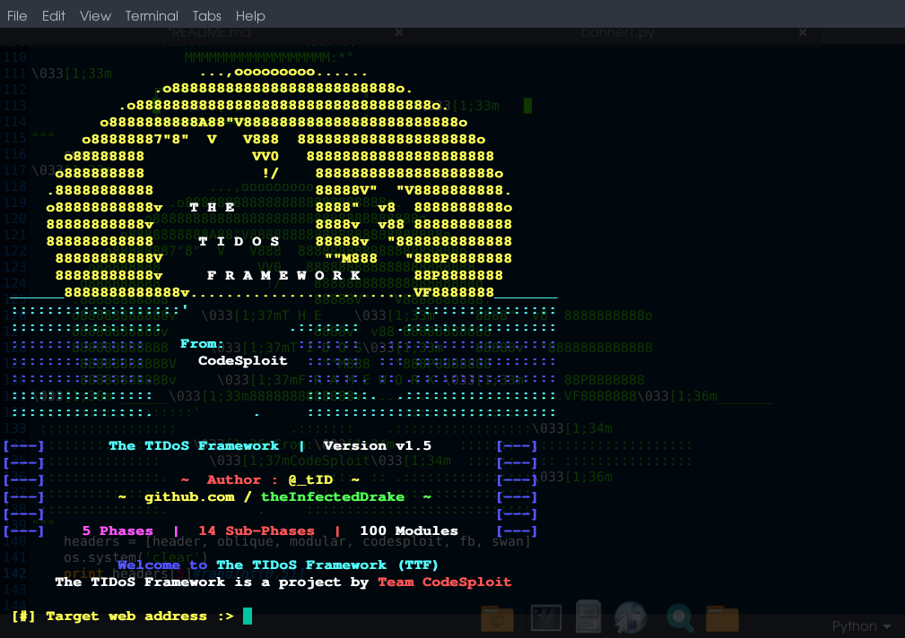
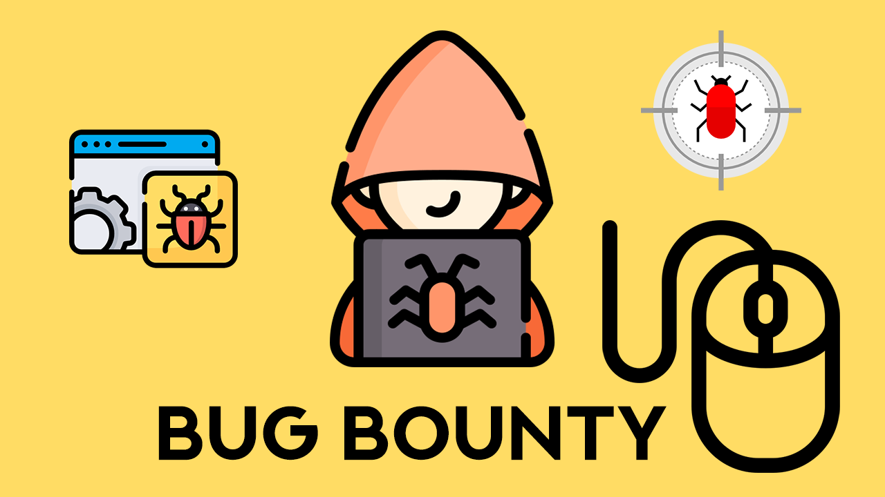

My Recent Posts
My Blog

Oct 10, 2020 / Penetration Testing
The Offensive Manual Web Application Penetration Testing Framework.
TiDos is an offensive web application framework with lot of modules. It helps in many penetration testing task from performing recon to attacking a web application. It is built in python and is fully automated tool.
Read More...

Oct 10, 2020 / Bug Bounty
Getting Started With Bug Bounty!
How to get started in Bug bounty is a common question nowadays. If you think you will become successful overnight or over the week or a month, this is not a field you should join. Doing bug bounties are very competitive, it might take a year at least to do good in bug bounty.
Read More...
12 june 2022 / Cybersecurity
Why is AI so important for Cybersecurity?
Artificial intelligence is key to facilitating cybersecurity in a number of ways. It can help companies take advantage of more data and use it to make better decisions.
Read More...🏠Go Back To Home!